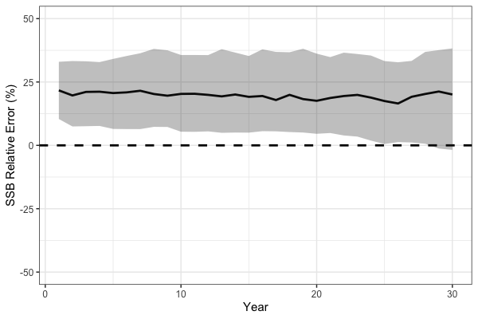

Simulation Testing (Cross and Self Tests)
l_simulation_testing.RmdSimulation Cross-Testing in SPoRC
Simulation testing stock assessment models is integral to evaluating
robustness and understanding how models perform under model
misspecification. The SPoRC framework supports simulation
testing in three forms:
- Self-testing: the estimation model (EM) has the same structure as the
operating model (OM).
- Cross-testing: the EM differs structurally from the OM, allowing
assessment of bias and sensitivity to incorrect assumptions.
- Closed loop simulations (see Closed Loop Simulations vignette
example).
In this first section of the vignette, we present a cross-test
example. The operating model (OM; simulated truth) assumes a logistic
selectivity curve for the fishery, while the estimation model
(SPoRC; EM) incorrectly specifies a dome-shaped (gamma)
selectivity curve.
The OM defines the biological processes, fishing dynamics, survey structure, and recruitment assumptions. Unless otherwise noted, the OM observation model uses default settings:
- Composition Input Sample Size = 100, with Multinomial sampling (Fishery and Survey)
- Survey index SD = 0.2, with lognormal observations
- Catch SD = 0.02, with lognormal observations
Define Model Dimensions
We start by defining the structural dimensions of the operating model.
sim_list <- Setup_Sim_Dim(
n_sims = 50, # number of simulations
n_yrs = 30, # number of years
n_regions = 1, # single region
n_ages = 10, # number of ages
n_lens = NULL,# no length structure
n_sexes = 1, # single sex
n_fish_fleets = 1, # one fishery fleet
n_srv_fleets = 1 # one survey fleet
)
# Create storage containers
sim_list <- Setup_Sim_Containers(sim_list)Fishing Processes
The fishery selectivity in the OM is logistic, centered around age 5.
sim_list <- Setup_Sim_Fishing(sim_list = sim_list, # update simulate list
# Logistic selectivity
fish_sel_input = replicate(
n = sim_list$n_sims,
array(rep(1 / (1 + exp(-3 * ((1:sim_list$n_ages) - 5))), each = sim_list$n_yrs),
dim = c(sim_list$n_regions, sim_list$n_yrs, sim_list$n_ages,
sim_list$n_sexes, sim_list$n_fish_fleets))
)
)Survey Processes
We specify survey selectivity as logistic, centered around age 3.
sim_list <- Setup_Sim_Survey(
sim_list = sim_list,
# Logistic selectivity
srv_sel_input = replicate(
n = sim_list$n_sims,
array(rep(1 / (1 + exp(-1 * ((1:sim_list$n_ages) - 3))), each = sim_list$n_yrs),
dim = c(sim_list$n_regions, sim_list$n_yrs, sim_list$n_ages,
sim_list$n_sexes, sim_list$n_srv))
)
)Biological Dynamics
Biological parameters are set for natural mortality, maturity-at-age, and weight-at-age. These values are relatively arbitrary and are specified to generically represent a fairly short-lived species.
sim_list <- Setup_Sim_Biologicals(
sim_list = sim_list, # simualtion list
natmort_input = replicate(n = sim_list$n_sims, array(0.3, dim = c(sim_list$n_regions, sim_list$n_yrs,
sim_list$n_ages, sim_list$n_sexes))), # natural mortality
WAA_input = replicate(n = sim_list$n_sims, array(rep(5 / (1 + exp(-3 * ((1:sim_list$n_ages) - 3))), each = sim_list$n_yrs),
dim = c(sim_list$n_regions, sim_list$n_yrs, sim_list$n_ages, sim_list$n_sexes))), # weight at age
WAA_fish_input = replicate(n = sim_list$n_sims, array(rep(5 / (1 + exp(-3 * ((1:sim_list$n_ages) - 3))), each = sim_list$n_yrs),
dim = c(sim_list$n_regions, sim_list$n_yrs, sim_list$n_ages, sim_list$n_sexes, sim_list$n_fish_fleets))), # fishery weight at age
WAA_srv_input = replicate(n = sim_list$n_sims, array(rep(5 / (1 + exp(-3 * ((1:sim_list$n_ages) - 3))), each = sim_list$n_yrs),
dim = c(sim_list$n_regions, sim_list$n_yrs, sim_list$n_ages, sim_list$n_sexes, sim_list$n_srv_fleets))), # survey weight at age
MatAA_input = replicate(n = sim_list$n_sims, array(rep(1 / (1 + exp(-3 * ((1:sim_list$n_ages) - 3))), each = sim_list$n_yrs),
dim = c(sim_list$n_regions, sim_list$n_yrs, sim_list$n_ages, sim_list$n_sexes))) # maturity at age
)Tagging and Movement
For this example, tagging is disabled and no movement is modeled.
sim_list <- Setup_Sim_Tagging(
sim_list = sim_list, # simulation list
UseTagging = 0
)
# No Movement
sim_list$Movement <- array(1, dim = c(sim_list$n_regions, sim_list$n_regions, sim_list$n_yrs, sim_list$n_ages, sim_list$n_sexes, sim_list$n_sims))Recruitment
Recruitment is modeled with mean recruitment dynamics, where
R0_input is the mean recruitment parameter centered at a
value of 5.
Run the Operating Model
set.seed(123)
sim_obj <- Simulate_Pop_Static(sim_list = sim_list, output_path = NULL) # get simulated datasetsThe object sim_obj contains the simulated population,
fishery, and survey data ready to pass to the EM for cross-testing.
Define Estimation Model
After simulating the operating model (OM), we can set up the
estimation model (EM) in SPoRC.
In this cross-test, the EM incorrectly assumes a dome-shaped (gamma)
fishery selectivity,
even though the OM used logistic selectivity. In general, EM settings
are identical to the OM, except for fishery selectivity.
setup_em <- function(sim_obj, sim) {
# Extract simulation data for current year and replicate
sim_data <- simulation_data_to_SPoRC(sim_env = sim_obj, y = sim_obj$n_years, sim = sim)
# Setup model dimensions
input_list <- Setup_Mod_Dim(
years = 1:sim_obj$n_years,
ages = 1:sim_obj$n_ages,
lens = sim_obj$n_lens,
n_regions = sim_obj$n_regions,
n_sexes = sim_obj$n_sexes,
n_fish_fleets = sim_obj$n_fish_fleets,
n_srv_fleets = sim_obj$n_srv_fleets,
verbose = F
)
# Recruitment setup
input_list <- Setup_Mod_Rec(
input_list = input_list,
do_rec_bias_ramp = 0, # not doing bias ramp
sigmaR_switch = 1, # when to switch from early to late sigmaR (switch in first year)
ln_sigmaR = rep(log(1) , 2), # 2 values for early and late sigma
rec_model = "mean_rec",
sigmaR_spec = "fix", # fix early sigmaR and late sigmaR
init_age_strc = 0, # geometric series to derive initial age structure
equil_init_age_strc = 2, # estimating all intial age deviations
ln_global_R0 = log(5)
)
# Biological setup
input_list <- Setup_Mod_Biologicals(
input_list = input_list,
# Data inputs
WAA = sim_data$WAA,
MatAA = sim_data$MatAA,
WAA_fish = sim_data$WAA_fish,
WAA_srv = sim_data$WAA_srv,
fit_lengths = 0, # not fitting lengths
AgeingError = sim_data$AgeingError,
M_spec = "fix", # fixing natural mortality
Fixed_natmort = array(0.3, dim = c(input_list$data$n_regions, length(input_list$data$years), length(input_list$data$ages), input_list$data$n_sexes))
)
# Movement and tagging
input_list <- Setup_Mod_Tagging(input_list = input_list, UseTagging = 0)
input_list <- Setup_Mod_Movement(
input_list = input_list,
use_fixed_movement = 1,
Fixed_Movement = NA,
do_recruits_move = 0
)
# Fishery catch & fishing mortality
input_list <- Setup_Mod_Catch_and_F(
input_list = input_list,
# Data inputs
ObsCatch = sim_data$ObsCatch,
Catch_Type = array(1, dim = c(length(input_list$data$years), input_list$data$n_fish_fleets)),
UseCatch = sim_data$UseCatch,
# Model options
Use_F_pen = 1,
sigmaC_spec = "fix",
# Fixing sigma C and F
ln_sigmaC = sim_data$ln_sigmaC,
ln_sigmaF = array(log(1), dim = c(input_list$data$n_regions, input_list$data$n_fish_fleets))
)
# Survey selectivity and catchability
input_list <- Setup_Mod_FishIdx_and_Comps(
input_list = input_list,
# Data inputs
ObsFishIdx = sim_data$ObsFishIdx,
ObsFishIdx_SE = sim_data$ObsFishIdx_SE,
UseFishIdx = sim_data$UseFishIdx,
ObsFishAgeComps = sim_data$ObsFishAgeComps,
ObsFishLenComps = sim_data$ObsFishLenComps,
UseFishAgeComps = sim_data$UseFishAgeComps,
UseFishLenComps = sim_data$UseFishLenComps,
ISS_FishAgeComps = sim_data$ISS_FishAgeComps,
ISS_FishLenComps = sim_data$ISS_FishLenComps,
# Model options
fish_idx_type = c("biom"),
FishAgeComps_LikeType = c("Multinomial"),
FishLenComps_LikeType = c("none"),
FishAgeComps_Type = c("agg_Year_1-terminal_Fleet_1"),
FishLenComps_Type = c("none_Year_1-terminal_Fleet_1")
)
# Survey indices and compositions
input_list <- Setup_Mod_SrvIdx_and_Comps(
input_list = input_list,
# Data inputs
ObsSrvIdx = sim_data$ObsSrvIdx,
ObsSrvIdx_SE = sim_data$ObsSrvIdx_SE,
UseSrvIdx = sim_data$UseSrvIdx,
ObsSrvAgeComps = sim_data$ObsSrvAgeComps,
ObsSrvLenComps = sim_data$ObsSrvLenComps,
UseSrvAgeComps = sim_data$UseSrvAgeComps,
UseSrvLenComps = sim_data$UseSrvLenComps,
ISS_SrvAgeComps = sim_data$ISS_SrvAgeComps,
ISS_SrvLenComps = sim_data$ISS_SrvLenComps,
# Model options
srv_idx_type = c("biom"),
SrvAgeComps_LikeType = c("Multinomial"),
SrvLenComps_LikeType = c("none"),
SrvAgeComps_Type = c("agg_Year_1-terminal_Fleet_1"),
SrvLenComps_Type = c("none_Year_1-terminal_Fleet_1")
)
# Fishery selectivity and catchability
input_list <- Setup_Mod_Fishsel_and_Q(
input_list = input_list,
# Model options
fish_sel_model = c("gamma_Fleet_1"), # fishery selex model (NOTE: ASSUMES DOMED)
fish_fixed_sel_pars_spec = c("est_all"), # whether to estiamte all fixed effects for fishery selectivity
fish_q_spec = "est_all" # estimate fishery q
)
# Survey selectivity and catchability
input_list <- Setup_Mod_Srvsel_and_Q(
input_list = input_list,
# Model options
srv_sel_model = c("logist2_Fleet_1"), # survey selectivity form
srv_fixed_sel_pars_spec = c("est_all"), # whether to estimate all fixed effects for survey selectivity
srv_q_spec = c("est_all") # whether to estiamte all fixed effects for survey catchability
)
# Data weighting
input_list <- Setup_Mod_Weighting(
input_list = input_list,
Wt_Catch = 1,
Wt_FishIdx = 1,
Wt_SrvIdx = 1,
Wt_Rec = 1,
Wt_F = 1,
Wt_Tagging = 0,
Wt_FishAgeComps = array(1, dim = c(input_list$data$n_regions, length(input_list$data$years),
input_list$data$n_sexes, input_list$data$n_fish_fleets)),
Wt_FishLenComps = array(1, dim = c(input_list$data$n_regions, length(input_list$data$years),
input_list$data$n_sexes, input_list$data$n_fish_fleets)),
Wt_SrvAgeComps = array(1, dim = c(input_list$data$n_regions,length(input_list$data$years),
input_list$data$n_sexes, input_list$data$n_srv_fleets)),
Wt_SrvLenComps = array(0, dim = c(input_list$data$n_regions, length(input_list$data$years),
input_list$data$n_sexes, input_list$data$n_srv_fleets))
)
return(input_list)
}Run Cross-Test Analysis
After setting up the EM, we can run the cross-test by fitting the
model to each simulated dataset.
We store the resulting spawning stock biomass (SSB) estimates for
comparison with the OM.
ssb_results <- array(NA, dim = c(sim_list$n_yrs, sim_list$n_sims)) # storage container
for(i in 1:sim_obj$n_sims) {
input_list <- setup_em(sim_obj, sim = i) # setup EM
# fit model
model <- fit_model(input_list$data,
input_list$par,
input_list$map,
random = NULL,
silent = T
)
ssb_results[,i] <- model$rep$SSB # save results
} # end i loopAs expected, the simulation cross-test demonstrates that misspecification of fishery selectivity leads to biased estimates of key population quantities. In particular, spawning stock biomass (SSB) is positively biased because the EM incorrectly assumes dome-shaped selectivity while the true OM selectivity is logistic, treating a portion of the population as invulnerable to the fishery, leading to an overestimation of stock size.
# Process SSB results
ssb_df_res <- reshape2::melt(ssb_results) %>%
rename(Year = Var1, Sim = Var2, Est = value) %>%
dplyr::left_join(reshape2::melt(sim_obj$SSB) %>%
dplyr::rename(Region = Var1, Year = Var2, Sim = Var3, True = value), by = c("Year", "Sim")) %>%
dplyr::mutate(RE = (Est - True) / True * 100) %>%
dplyr::group_by(Year) %>%
dplyr::summarise(median = median(RE),
lwr = quantile(RE, 0.1),
upr = quantile(RE, 0.8))
# plot!
print(
ggplot(ssb_df_res, aes(x = Year, y = median, ymin = lwr, ymax = upr)) +
geom_line(lwd = 1.3) +
geom_hline(yintercept = 0, lwd = 1.3, lty = 2) +
coord_cartesian(ylim = c(-50, 50)) +
geom_ribbon(alpha = 0.3) +
theme_bw(base_size = 15) +
labs(x = 'Year', y = 'SSB Relative Error (%)')
)
Self Testing
In addition to simulation cross-testing, users can also conduct
self-tests. Simulation self-testing is useful because it helps evaluate
model robustness in the context of parameter identifiability. Ideally, a
simulation self-test should return unbiased parameter estimates on
average. If it does not, this generally indicates a lack of
identifiability for some parameters given the available data. Here, we
demonstrate simulation self-testing using Dusky Rockfish as an example.
Simulation self-testing is facilitated by the helper function
simulation_self_test, which allows users to conduct
simulations using a fitted SPoRC model (i.e., providing
data, parameters, mapping,
rep, and sd_rep). To reduce computation time,
we parallelize the simulations across 8 cores and output estimates of
SSB and recruitment.
# load in dusky rockfish model
data("dusky_rtmb_model")
# Using Dusky Rockfish as example to conduct simulation self-testing
self_test <- simulation_self_test(
data = dusky_rtmb_model$data,
parameters = dusky_rtmb_model$parameters,
mapping = dusky_rtmb_model$mapping,
random = NULL,
rep = dusky_rtmb_model$rep,
sd_rep = dusky_rtmb_model$sdrep,
n_sims = 500,
newton_loops = 3,
do_sdrep = FALSE,
do_par = TRUE,
n_cores = 8,
output_path = NULL,
what = c("SSB", "Rec")
)The self-test indicates that the model is generally able to recover the overall trends well. However, some biases manifest in the early and late periods, likely due to uncertainty in catch data in the early period and a lack of age composition data during these periods.
# Process self test results
self_test_res <- reshape2::melt(self_test$SSB) %>%
dplyr::rename(Region = Var1, Year = Var2, Sim = Var3, Est = value) %>%
dplyr::left_join(reshape2::melt(dusky_rtmb_model$rep$SSB) %>%
dplyr::rename(Region = Var1, Year = Var2, Best = value),
by = c("Region", "Year")) %>%
dplyr::mutate(Type = 'SSB') %>%
dplyr::bind_rows(
reshape2::melt(self_test$Rec) %>%
dplyr::rename(Region = Var1, Year = Var2, Sim = Var3, Est = value) %>%
dplyr::left_join(reshape2::melt(dusky_rtmb_model$rep$Rec) %>%
dplyr::rename(Region = Var1, Year = Var2, Best = value),
by = c("Region", "Year")) %>%
dplyr::mutate(Type = 'Rec')
)
print(
ggplot() +
geom_line(self_test_res, mapping = aes(x = Year, y = Est, group = Sim)) +
geom_line(self_test_res, mapping = aes(x = Year, y = Best), color = 'red', lty = 2, lwd = 1.3) +
coord_cartesian(ylim = c(0, NA)) +
facet_wrap(~Type, scales = 'free') +
theme_bw(base_size = 15)
)